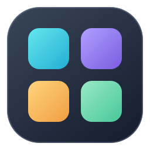
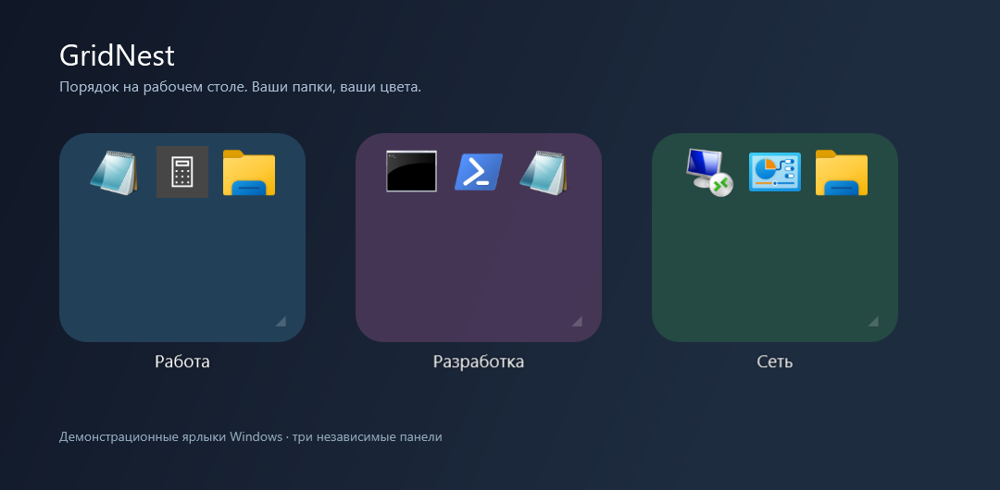

Ровно столько места,
сколько нужно.
Меняйте размер целыми ячейками. Папки привязываются к общей сетке, а команда выравнивания расставляет их без перекрытий.

GridNestСоберите ярлыки в папки, разложите по сетке
и дайте каждой группе свой цвет.

GridNest работает с обычными ярлыками Windows. Никаких списков путей к программам: перетащите значок на панель и пользуйтесь.
Меняйте размер целыми ячейками. Папки привязываются к общей сетке, а команда выравнивания расставляет их без перекрытий.
Переставляйте значки внутри папки, оставляйте свободные ячейки и переносите между группами. Порядок сохраняется. Короткие анимации наведения можно отключить.
Откройте поиск через Ctrl + F в активной панели или из трея. Ищите по имени приложения или группы.
Готовые образцы, палитра Windows или точный HEX-код. Цвет и прозрачность сохраняются отдельно для каждой папки.
Попробуйте цвет на иллюстрации справа.
#24425CСкачайте и распакуйте весь комплект в обычную папку.
Откройте PowerShell в распакованной папке и выполните команду. Права администратора не нужны.
powershell.exe -NoProfile -ExecutionPolicy Bypass -File .\Install.ps1Bypass действует только для этого запуска. Для установки без автозапуска добавьте -NoStartup.
Перетащите свои значки в папки. Настройки доступны по правому щелчку, управление всеми панелями — через значок рядом с часами.
Локально и без телеметрии. GridNest не отправляет сетевых запросов, не собирает данные и не обновляется автоматически. Ярлыки и настройки хранятся в вашей папке «Документы».
Удаление с сохранением. Убранная группа уходит в локальный архив вместе с содержимым. Приложения и их установки остаются на месте.
Проект ориентирован на Windows 11 и использует системный .NET Framework/WPF. Проверен в одной Windows-среде; все версии Windows, DPI и несколько мониторов не сертифицированы. Поддерживается рабочая область основного экрана. Полноэкранные окна и «Показать рабочий стол» могут скрывать панели. Подложка без размытия.
Программа бесплатная, под MIT. Публичный исходный код доступен на GitHub. Сборка пока не имеет цифровой подписи издателя. Инструкции по сборке и проверке находятся в README репозитория.
GridNest не связан с Microsoft. Значки Windows на демонстрации принадлежат их правообладателям.